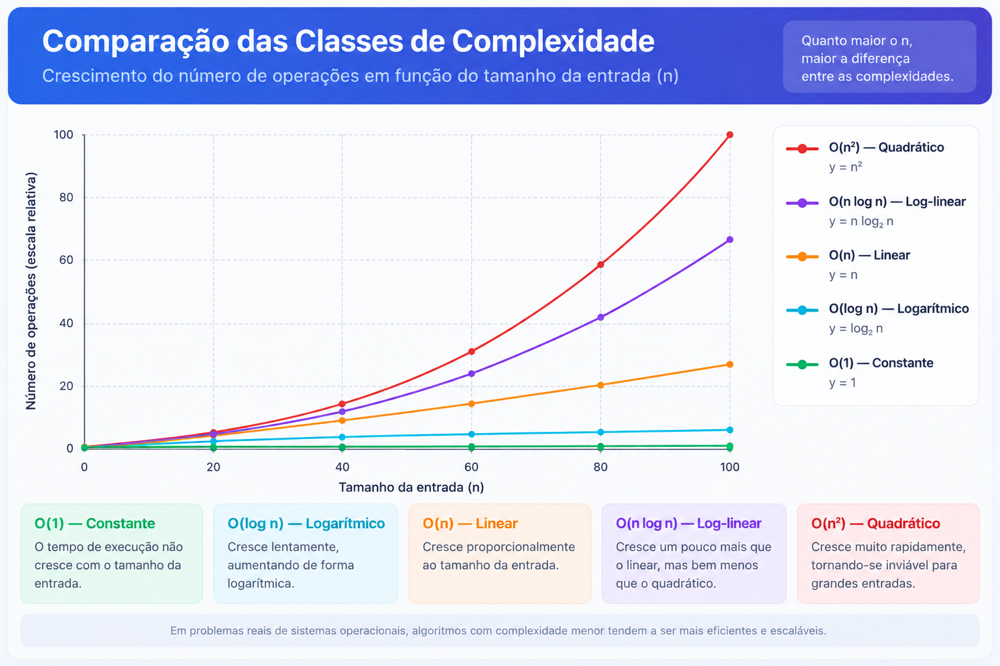

visão geral
Como a notação Big-O explica o comportamento do sistema operacional
O que é notação Big-O
A notação O(n) descreve como o número de operações de um algoritmo cresce à medida que o tamanho da entrada n aumenta. Em um sistema operacional, n costuma ser o número de processos na fila de execução, o número de blocos livres de memória, ou o número de tipos de recurso disponíveis. A classe de complexidade de um algoritmo de escalonamento ou de alocação de memória determina diretamente o quanto o sistema "sente" o crescimento da carga: um escalonador O(n²) pode ficar perceptivelmente mais lento com centenas de processos, enquanto um O(1) não.
As cinco classes a seguir aparecem, nessa ordem, do algoritmo mais escalável para o menos escalável.

Resumo das cinco classes
| Classe | Nome | Exemplo no SO usado nesta apresentação |
|---|---|---|
| O(1) | Constante | Escalonador O(1) do kernel Linux (2.6–2.6.22) |
| O(log n) | Logarítmico | Árvore rubro-negra do Completely Fair Scheduler (CFS) |
| O(n) | Linear | Alocador de memória por lista livre (free list) |
| O(n log n) | Log-linear | Ordenação externa (external merge sort) em memória virtual |
| O(n²) | Quadrático | Algoritmo de segurança do Algoritmo do Banqueiro |
classe 1 de 5
O(1) — Tempo Constante
Definição
Um algoritmo é O(1) quando o número de operações que ele executa não depende do tamanho da entrada n. Dobrar, multiplicar por dez ou por mil o número de processos ou de recursos não muda o número de passos necessários — o gráfico é uma linha horizontal.
Exemplo real: escalonador O(1) do kernel Linux
Entre as versões 2.6 e 2.6.22 do kernel Linux, o escalonador de processos foi reprojetado para decidir qual tarefa executar em tempo constante, qualquer que fosse o número de processos no sistema. Ele mantém, para cada nível de prioridade, um vetor de tarefas ativas e um de tarefas expiradas, além de um bitmap de prioridades ocupadas. Encontrar a tarefa de maior prioridade é uma busca no bitmap (tamanho fixo) e trocar os dois vetores, quando o tempo de todas as tarefas ativas se esgota, é apenas a troca de dois ponteiros — nenhuma dessas operações percorre a lista de processos.
// ideia simplificada do escalonador O(1) estrutura RunQueue { arrayativos[140] // 140 níveis de prioridade array expirados[140] bitmap prioridades_ocupadas // 1 bit por nível } escolherProximaTarefa(fila): nivel <- primeiro_bit_ligado(fila.prioridades_ocupadas) // O(1) retorna fila.ativos[nivel].topo() // O(1) trocarFilas(fila): swap(fila.ativos, fila.expirados) // troca de ponteiros, O(1)
Outro exemplo: alocadores de memória segregados (TLSF)
Do lado da memória, alocadores de "segregated free list" — como o TLSF (Two-Level Segregated Fit), usado em sistemas embarcados e de tempo real — mantêm uma lista livre separada por faixa de tamanho, indexada por uma pequena tabela de bits. Isso faz com que tanto a alocação quanto a mesclagem (coalescência) de blocos livres aconteçam em tempo constante, mesmo com milhares de blocos livres no heap.
É possível melhorar essa classe?
Assintoticamente, não existe classe mais eficiente que O(1). O que pode (e costuma) ser otimizado é o custo constante em si — menos instruções, menos cache-misses. Curiosamente, a própria história do kernel Linux mostra o caminho contrário: o escalonador O(1) foi substituído pelo Completely Fair Scheduler, que é O(log n). Isso aconteceu porque o critério deixou de ser apenas "decidir rápido" e passou a ser "decidir de forma justa e previsível" — o algoritmo O(1) usava heurísticas complexas para estimar se um processo era interativo, e essas heurísticas eram frágeis. Ou seja: uma classe assintótica melhor nem sempre é o objetivo certo quando a qualidade da decisão importa mais que a velocidade bruta.
classe 2 de 5
O(log n) — Tempo Logarítmico
Definição
Um algoritmo é O(log n) quando cada operação elimina uma fração fixa (normalmente metade) das possibilidades restantes. É típico de estruturas de dados organizadas em árvore balanceada, onde inserir, remover ou buscar um elemento custa, no pior caso, a altura da árvore — proporcional a log₂(n).
Exemplo real: Completely Fair Scheduler (CFS) do Linux
Desde a versão 2.6.23 (e até a 6.6, quando foi sucedido pelo EEVDF), o escalonador padrão do Linux é o CFS. Em vez de filas por prioridade, ele guarda todas as tarefas executáveis em uma árvore rubro-negra (red-black tree), indexada pelo vruntime — o tempo de CPU "virtual" já consumido por cada tarefa. A tarefa mais à esquerda da árvore é sempre a que recebeu menos tempo de CPU até agora, e é ela que roda em seguida. Inserir uma tarefa, remover a que acabou de rodar e rebalancear a árvore custam O(log n) no número de tarefas executáveis.
// ideia simplificada do CFS estrutura CfsRunQueue { RedBlackTree tarefas_por_vruntime // chave = vruntime } escolherProximaTarefa(fila): retorna fila.tarefas_por_vruntime.no_mais_a_esquerda() // O(log n) aoTerminarFatiaDeTempo(fila, tarefa): tarefa.vruntime += tempo_de_cpu_usado(tarefa) fila.tarefas_por_vruntime.reinserir(tarefa) // O(log n)
Outro exemplo: alocador buddy (buddy system)
No gerenciamento de memória, o alocador buddy (usado, por exemplo, pelo alocador de páginas físicas do Linux) organiza a memória livre em blocos de tamanho potência de 2. Encontrar e mesclar ("coalescer") um bloco livre com seu par ("buddy") de mesmo tamanho percorre no máximo log₂ do número de níveis de tamanho — também O(log n).
É possível melhorar essa classe?
Parcialmente. A própria implementação do CFS já otimiza a leitura da tarefa de menor vruntime para O(1), guardando em cache um ponteiro para o nó mais à esquerda — só a atualização da árvore continua O(log n), porque manter a estrutura balanceada exige isso. Já no caso de alocadores de memória, é possível trocar o buddy system (O(log n)) por um alocador segregado tipo TLSF, que consegue O(1) à custa de mais fragmentação interna — ou seja, a troca de classe é possível, mas implica um outro tipo de custo (mais memória desperdiçada).
classe 3 de 5
O(n) — Tempo Linear
Definição
Um algoritmo é O(n) quando o número de operações cresce na mesma proporção que o tamanho da entrada: dobrar n dobra o trabalho. É o comportamento de qualquer algoritmo que precisa, no pior caso, examinar cada elemento da entrada uma única vez.
Exemplo real: alocador de memória por lista livre
Em implementações clássicas de alocadores de memória do tipo sequential fit (first-fit, best-fit, worst-fit), a memória livre é organizada como uma lista encadeada de blocos. Para achar um bloco de tamanho suficiente, o alocador percorre a lista do início — no pior caso, até o último bloco. Com n blocos livres, isso é O(n) por alocação.
// first-fit em uma lista livre encadeada alocar(listaLivre, tamanho): bloco <- listaLivre.primeiro enquanto bloco != nulo: // até n blocos, O(n) se bloco.tamanho >= tamanho: retorna reservar(bloco, tamanho) bloco <- bloco.proximo retorna ERRO_SEM_MEMORIA
Outro exemplo histórico: escalonador O(n) do Linux (2.4–2.6)
Antes do escalonador O(1), o kernel Linux (versões 2.4 a 2.6) usava um escalonador que, a cada decisão, percorria a lista completa de processos executáveis para recalcular prioridades e escolher o próximo a rodar — daí o nome "O(n) scheduler". Com servidores executando centenas de processos, esse custo se tornava perceptível a cada troca de contexto.
É possível melhorar essa classe?
Sim, e a história dos sistemas operacionais mostra isso acontecendo duas vezes. Para memória, trocar a lista livre simples por um alocador buddy (O(log n)) ou por listas segregadas por tamanho tipo TLSF (O(1)) elimina a busca linear, ao custo de estruturas de dados um pouco mais complexas. Para processos, foi exatamente a substituição do escalonador O(n) pelo escalonador O(1), no kernel 2.6, que resolveu esse mesmo problema — reduzindo a complexidade de uma classe inteira para outra.
classe 4 de 5
O(n log n) — Tempo Log-linear
Definição
Um algoritmo é O(n log n) quando combina um custo linear — passar por todos os n elementos — com um fator logarítmico proveniente de dividir o problema em partes menores (como em merge sort ou heapsort). É o limite inferior conhecido para algoritmos de ordenação baseados em comparação.
Exemplo real: ordenação externa e gerenciamento de memória virtual
A ordenação externa (external merge sort) existe justamente por causa de uma limitação de memória: ela é usada quando o volume de dados a ordenar é maior do que a RAM disponível. O algoritmo divide os dados em blocos ("runs") do tamanho da memória principal, ordena cada bloco internamente (O(n log n) por bloco) e depois faz uma mescla de várias vias (k-way merge) dos blocos já ordenados, usando o disco como extensão da memória — um caso concreto em que o sistema operacional trata o armazenamento secundário como parte do gerenciamento de memória. O custo total permanece O(n log n) comparações, descrito classicamente por Donald Knuth em The Art of Computer Programming, vol. 3 (Sorting and Searching).
// ordenação externa (ideia geral) ordenarExterno(arquivo, memoriaDisponivel): runs <- [] enquanto houver dados no arquivo: bloco <- ler(arquivo, memoriaDisponivel) ordenarNaMemoria(bloco) // O(m log m), m = tam. do bloco runs.adicionar(escreverEmDisco(bloco)) enquanto runs.tamanho > 1: runs <- mesclarKaKa(runs) // k-way merge, O(n log k) retorna runs[0]
É possível melhorar essa classe?
Em casos particulares, sim. Quando as chaves a ordenar têm um domínio de valores limitado e conhecido (por exemplo, prioridades de processos com poucos níveis, como no escalonador O(n) antigo), é possível trocar a ordenação por comparação (O(n log n)) por counting sort ou radix sort, que são O(n) — essa é, inclusive, a ideia por trás dos vetores por nível de prioridade usados no escalonador O(1) do Linux. A limitação é que essa troca só é válida quando o domínio dos dados é pequeno e conhecido de antemão; para chaves arbitrárias (como registros de tamanhos e endereços de memória variados), o limite inferior de O(n log n) por comparação permanece.
classe 5 de 5
O(n²) — Tempo Quadrático
Definição
Um algoritmo é O(n²) quando o número de operações cresce com o quadrado do tamanho da entrada — tipicamente porque, para cada um dos n elementos, é preciso compará-lo (ou combiná-lo) com todos os outros n elementos. É a classe mais custosa entre as apresentadas aqui, e a que mais rapidamente se torna impraticável conforme n cresce.
Exemplo real: algoritmo de segurança do Algoritmo do Banqueiro
O Algoritmo do Banqueiro, criado por Edsger Dijkstra para o sistema operacional THE, é usado para evitar deadlocks: antes de conceder um pedido de recursos, o sistema simula a concessão e verifica se ainda existe uma sequência segura de execução para todos os processos. Essa verificação — o safety algorithm — precisa, no pior caso, repetir n vezes a varredura de todos os n processos (procurando um processo cuja necessidade caiba nos recursos disponíveis), para cada um dos m tipos de recurso. Isso dá uma complexidade de O(n² × m), um exemplo clássico de algoritmo quadrático em livros de sistemas operacionais.
// safety algorithm do Algoritmo do Banqueiro (resumo) estadoEhSeguro(processos, recursosDisponiveis): trabalho <- copiar(recursosDisponiveis) finalizado <- vetor de falso, tamanho n repita ate n vezes: // laço externo: até n encontrouAlgum <- falso para cada processo em processos: // laço interno: n se !finalizado[processo] e necessidade[processo] <= trabalho: trabalho += alocado[processo] // libera recursos "de volta" finalizado[processo] <- verdadeiro encontrouAlgum <- verdadeiro se !encontrouAlgum: pare retorna todos(finalizado) // custo total: O(n² · m)
É possível melhorar essa classe?
Sim — e há pesquisa publicada comprovando isso. O artigo "Banker's Algorithm Optimalization to Dynamically Avoid Deadlock in Operating System" propõe uma estrutura de dados que memoriza sequências seguras já encontradas entre chamadas do alocador, derivando um teste de segurança O(log n) para n processos em vez de O(n²). Mais recentemente, o artigo "DBDAA: A real-time approach to Dynamic Banker's Deadlock Avoidance Algorithm" (PLOS One, 2024) propõe incluir processos dinamicamente na verificação de segurança, reduzindo o número de comparações necessárias e levando a complexidade de O(n²·d) (algoritmo original) para O(n·d) no pior caso e O(n) no melhor caso. Isso mostra que o Algoritmo do Banqueiro "clássico" é O(n²) por causa da sua estrutura de dados original (matrizes percorridas por varredura completa), mas reformulações do algoritmo — usando estruturas auxiliares que evitam recomeçar a verificação do zero a cada chamada — conseguem reduzir a complexidade para uma classe inferior.
fontes
Referências
O(1) — escalonador O(1) / alocadores segregados
- O(1) scheduler — Wikipedia en.wikipedia.org/wiki/O(1)_scheduler
- Workload Schedulers — Genesis, Algorithms and Differences arxiv.org/pdf/2511.10258 — histórico dos escalonadores O(n), O(1) e CFS no Linux
- Host-Based Allocators for Device Memory arxiv.org/pdf/2405.07079 — TLSF e alocação O(1) por listas segregadas
O(log n) — Completely Fair Scheduler / alocador buddy
- CFS Scheduler — The Linux Kernel documentation docs.kernel.org/scheduler/sched-design-CFS.html — documentação oficial do kernel
- Completely Fair Scheduler — Wikipedia en.wikipedia.org/wiki/Completely_Fair_Scheduler
- buddy-malloc — implementação de referência github.com/evanw/buddy-malloc — malloc/free em O(log n)
O(n) — alocador por lista livre / escalonador O(n)
- Memory Allocation Strategies — Part 5: Free List Allocator gingerbill.org — busca O(N) em lista livre encadeada
- Buddy Method and Other Memory Allocation Methods — CS3 Data Structures & Algorithms opendsa-server.cs.vt.edu — comparação entre sequential fit O(n) e buddy system
- O(n) scheduler — Wikipedia en.wikipedia.org/wiki/O(n)_scheduler
O(n log n) — ordenação externa
- External Sorting — GeeksforGeeks geeksforgeeks.org/dsa/external-sorting
- External Sorting — Algorithmica en.algorithmica.org/hpc/external-memory/sorting — análise formal O(n log n)
- Run Generation Revisited: What Goes Up May or May Not Come Down arxiv.org/pdf/1504.06501 — modelo de memória externa (DAM) para ordenação
O(n²) — Algoritmo do Banqueiro e suas otimizações
- Banker's algorithm — Wikipedia en.wikipedia.org/wiki/Banker's_algorithm
- Program for Banker's Algorithm — Safety Algorithm — GeeksforGeeks geeksforgeeks.org — complexidade O(n·n·m)
- DBDAA: A real-time approach to Dynamic Banker's Deadlock Avoidance Algorithm — PLOS One (2024) journals.plos.org — reduz O(n²·d) para O(n·d) / O(n)
- Banker's Algorithm Optimalization to Dynamically Avoid Deadlock in Operating System academia.edu — deriva um teste de segurança O(log n)